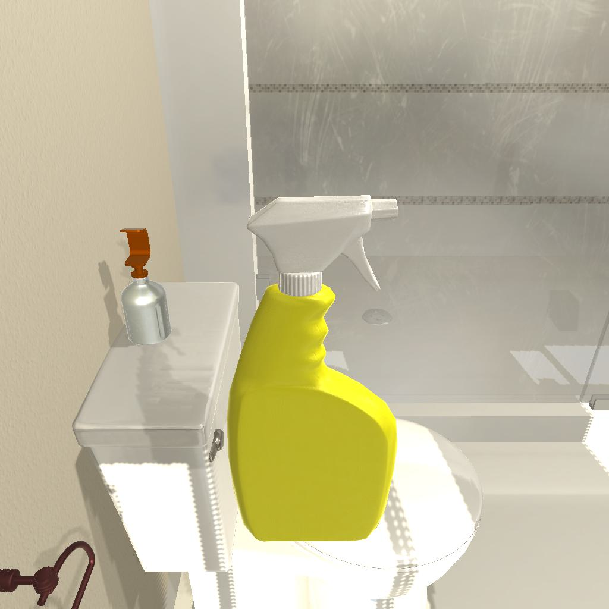

---------------------------------------------------------task: 28---------------------------------------------------------
--------------------------------------------------------------------------------------------------------------------------------------------------------------------
--------------------------------------------------------------------------------------------------------------------------------------------------------------------
Step:--------------------------------------------------------------------------11-------------------------------------------------------------------------------
----------------------------------------
VLM Prompt:
Image1:
Image2:
**Instruction**
1. Analyze the provided images to identify all visible household objects and compare the difference between images (e.h. whether the object is opened or not and taken on hand or not), focusing on those relevant to the task description "put two spraybottle in toilet."
2. Use the analysis of images and the task hint "The agent must find an object of the desired type, pick it up, find the correct location to place it, put it down there, then look for another object of the desired type, pick it up, return to previous location, and put it down there with the other object." to answer the question: what is the most reasonable action in the choices for the task description "put two spraybottle in toilet"?
3. Decide and write the answer using the template: The answer is: (i): , where i is the real number. If there is no desired object in images, search every place based on **Initial Observation** to find the object. And if no one is exactly correct, choose a similar answer.
**Initial Observation**
You are in the middle of a room. Looking quickly around you, you can see bathtub (1), bathtubbasin (1), cart (1), sink (1), garbagecan (1), sinkbasin (1), countertop (1), drawer (1-4), toilet (1), toiletpaperhanger (1)
**Answer Choices**
(1): go to bathtub 1
(2): go to bathtubbasin 1
(3): go to cart 1
(4): go to sink 1
(5): go to garbagecan 1
(6): go to sinkbasin 1
(7): go to countertop 1
(8): go to drawer 1
(9): go to drawer 2
(10): go to drawer 3
(11): go to drawer 4
(12): go to toiletpaperhanger 1
(13): take showerdoor 1 from toilet 1
(14): take soapbottle 2 from toilet 1
(15): examine toilet 1
**Answer**
Let's think step by step by following the instructions.
----------------------------------------
----------------------------------------
Original Response:
Image Analysis:
In both images, we can see a yellow spray bottle with a white spray nozzle and a smaller silver bottle with a brown pump on top. The only difference between the two images is the position of the yellow spray bottle; in Image 1, it is on top of the toilet tank, and in Image 2, it is on the side of the toilet tank. This suggests that the yellow spray bottle has been moved, although it is not clear if it was picked up or just shifted to the side.
Task Description Analysis:
The task "put two spray bottles in toilet" requires finding two spray bottles, picking them up, and placing them in the toilet. From the images, we can identify one yellow spray bottle that can be used for the task. However, there is no evidence of a second spray bottle in the visible area.
Answer Choice Analysis:
There are no actions listed that directly involve picking up the yellow spray bottle that we can see in the images. The actions provided are about going to various locations or taking other objects that are not relevant to the task (showerdoor and soapbottle). The closest action to the desired one would be to examine the toilet, as it may lead to finding or confirming the presence of the second spray bottle needed for the task.
Based on the Initial Observation, other locations such as drawers or the countertop could potentially contain the second spray bottle. However, this is not confirmed by the images.
Conclusion:
Given the available information and the task description, the most reasonable action related to the task of "put two spray bottles in toilet" is to first examine the toilet to ensure if there is a second spray bottle present or if the visible yellow spray bottle can be picked up. If not, the next step would be to search the other listed locations.
The answer is: (15): examine toilet 1.
----------------------------------------
----------------------------------------
>>> Refine Original VLM Response and Get Pure Action: examine toilet 1
----------------------------------------
-----------------------------------------------------------------
Running time: 12.6133394241333 seconds
Total Money: 14.681980000000003
-----------------------------------------------------------------
-----------------------------------------------------------------
Text Observation:On the toilet 1, you see a showerdoor 1, a spraybottle 1, a soapbottle 2, and a scrubbrush 1.
-----------------------------------------------------------------
UNSUCCEED